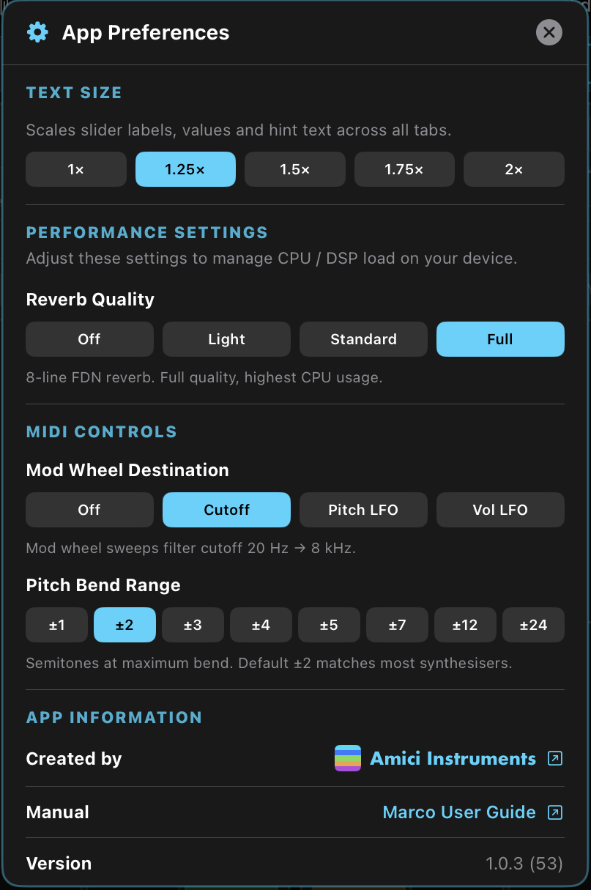

1欢迎使用 Marco
Marco 是一台具备独立塑形与双硬同步的四振荡器合成器——一台面向 iPad 与 iPhone（以及任何可运行 iPad 应用的 Apple 芯片 Mac）的单音合成器，内含两组并行运行的独立硬同步组。
本手册涵盖每一个页面与控件。如果你刚接触合成，建议从头读下去；如果你只想查某一项功能，用左侧目录直接跳过去。
Marco 有两种使用形式：
- iPad 与 iPhone 上的独立应用——支持 MIDI 输入，并内置一个公有领域旋律的乐曲播放器。iPad 独立版还带有内置键盘。
- The Marco AUv3 插件——可载入 Logic Pro for iPad、Loopy Pro、AUM 及其他兼容的 AUv3 宿主。
同一个版本也能在 Apple 芯片 Mac（M1 及以上）上运行——在 Mac App Store 的「iPhone 与 iPad App」分类下即可找到，像安装任何 iPad 应用一样安装。你可以独立运行它，也可以在 Logic Pro、Ableton Live 或 AUM 等 macOS 宿主中载入 The Marco AUv3 插件。
本手册的大部分内容对两种形式都适用。凡有差异之处——例如乐曲播放器仅存在于独立应用中——都会在相应章节明确标注。
2系统要求
- 运行当前版本 iPadOS 的 iPad。
- 运行当前版本 iOS 的 iPhone。
- Apple 芯片 Mac（M1 及以上）——可在 Mac App Store 的「iPhone 与 iPad App」分类下找到 Marco。
- 使用 The Marco 插件时需要 AUv3 宿主（例如 Logic Pro for iPad、Loopy Pro、AUM 及其他兼容宿主）。
3快速上手
做出好声音最快的方式，是让 Marco 替你做一个。
- 打开 Marco（独立应用），或在宿主中将它作为 AUv3 插件载入。
- 点击顶部标题栏的骰子按钮（🎲），打开随机预设生成器。
- 让三个 Style 风格胶囊——Mild、Wild 与 Recipe——保持全部选中。它们是多选的，因此每次掷出都会随机挑一个，你能听到最宽的声音范围。
- 选一个类别（Bass、Lead、Pad 等），或者保持在 All。
- 点击 Generate。一个全新的预设就位了。
- 弹几个音——用内置键盘（iPad 独立版），或用你的 MIDI 控制器 / DAW。
- 如果你喜欢这个方向但想要一些变化，点击 Tweak 来微调当前预设，而不是重新掷一个全新的。
找到中意的声音后，把它保存到你的 User 库——参见 12. 预设。
4界面导览
快速走一遍，看看东西都在哪儿。

顶部标题栏
从左到右横跨屏幕顶端：
- MARCO 标志（左上）——多彩字标，纯装饰。
- 预设选择器（居中）——当前预设名称，两侧各有 < 与 > 箭头。点箭头可逐个切换预设，点预设名本身则打开完整的预设浏览器（参见 12. 预设）。
- 随机器按钮（橙色）——按钮上显示当前的 Base Preset Source 基础预设来源（例如 All、Bass）。点击可打开随机预设生成器，在那里你可以更改基础预设来源，也可以选择哪些振荡器与参数参与随机（参见 13. 随机预设生成器）。
- MIDI 设置 （独立应用）——打开 MIDI 设置对话框。
- ⚙️ 设置齿轮（右上）——打开应用偏好设置对话框（参见 16. 应用偏好设置）。
工具栏
标题栏下方就是在 Marco 各个模块之间切换的横向标签页：
- Oscillators — 四个振荡器（波形、音量、折叠、失谐、同步模式）。
- Vol Env — 每个振荡器的音量（VCA）包络。
- Filt Env — 每个振荡器的滤波器包络。
- Filter — 每个振荡器的滤波器类型与设置。
- Cut LFO — 滤波器截止频率 LFO。
- Vol LFO — 音量 LFO。
- Fold LFO — 波形折叠 LFO。
- Pitch LFO — 音高 LFO。
- Glide — 音符之间的滑音（portamento）。
- Master — 完整输出链路：过载、压缩器、延迟、混响、立体声、限制器。
Master Strip 主控条
就在四个振荡器列的正上方，Master Strip 汇集了全局控件与常用对话框的快捷按钮。从左到右：

- ? Hints 按钮（最左）——为你当前所在的页面打开一个随上下文变化的 Hints 提示对话框。按钮颜色会跟随当前页面变化。参见下方 Hints 提示 — ? 按钮。
- Per-Osc / Linked 切换——决定当前页面的模块是以四个独立的逐振荡器副本运行，还是作为一个共享实例运行（参见 Per-Osc 与 Linked 模式）。它出现在每一个调制页面上，但不会出现在 Oscillator 页面（始终逐振荡器）或 Master 页面（始终联动）。
- 输出电平表——显示主输出的横向电平表。绿色健康，黄色接近削波，红色表示已经削波了；看到红色就把 Gain 拉下来。
- Gain——主输出总电平。
- Scope 图标——打开波形示波器（参见 14. Scope 示波器）。
- XY Pad 图标——打开富有表现力的 XY 控制面（参见 15. XY 触控板）。
- ◀ 🎲 ▶ 骰子与历史箭头——骰子是快速生成的触发器（点一下就用随机器里设定的基础预设来源与风格掷出一个新预设，无需打开对话框）。骰子下方有一个实时小标签，显示 Category.Styles——在你点下去之前就告诉你下一次掷出会产生什么（参见 骰子标签）。两侧的橙色箭头可在你最近 100 个随机与微调过的声音之间前后穿梭（参见 随机预设历史）。
- DUAL HARD SYNC——循环切换各种有效的双硬同步组合（参见 6. Dual Hard Sync 双硬同步）。
四个振荡器列
主区域显示四个振荡器列，各有自己的颜色：Osc 1 Osc 2 Osc 3 Osc 4。这个颜色会在 Marco 的任何地方跟随该振荡器——包括示波器、LFO 页面与预设浏览器。
各振荡器的魔棒按钮
每个页面都有一个小小的魔棒图标。在基于振荡器的页面上，它位于每个振荡器的列标题里，点击它会执行一次逐振荡器 Tweak——一次外科手术般的微调，只改动当前页面上属于那一个振荡器的可见参数。Master 页面的每个区块也各有一个魔棒图标，因此你可以只微调那一个区块（例如只推一下混响，而不碰延迟或过载）。
- 点 Osc 2 的 Filter 页面上的魔棒 → 微调 Osc 2 的滤波器类型、截止频率、共振、包络量与键位跟踪。其他一概不动。
- 点 Osc 1 的 Vol Env 页面上的魔棒 → 只微调 Osc 1 的 ADSR。
- 当该区块的 ON/OFF 开关处于关闭状态时，魔棒会被禁用（没有可微调的东西）。
这是在不触碰其他一切的前提下，为一个声音加入新点子的最快方式。完整细节见 13. 随机预设生成器。
Per-Osc 与 Linked 模式
有一个概念在 Marco 里无处不在，值得一开始就搞清楚：大多数调制页面都可以在 Per-Osc（逐振荡器）或 Linked（联动）两种模式下运行。你可以用每个页面标题旁边的按钮在两者之间切换——按钮上显示的就是当前模式（PER-OSC 或 LINKED）。


Per-Osc 模式
四个振荡器各自拥有该模块的一份独立副本。所以在 Per-Osc 滤波器模式下，你可以让 Osc 1 跑一个全开的 24dB 低通，让 Osc 2 跑一个扫动的陷波，让 Osc 3 跑带通，再让 Osc 4 跑共振峰滤波器——四者同时进行。每个振荡器的控件都有颜色区分，所以你永远知道自己在编辑哪一个。
Linked 模式
四个振荡器共享该模块的单一实例。一组控件同时驱动每一个振荡器。它更省 CPU、调起来更快，也是一个很好的起点——调一个控件，四个声部一起动。任何时候想要单独塑造每个振荡器，切到 Per-Osc 就好。
以下页面存在 Per-Osc 与 Linked 之分：Vol Env、Filt Env、Filter、Cut LFO、Vol LFO、Fold LFO、Pitch LFO 与 Glide。Oscillators 页面本身在性质上就永远是逐振荡器的——每个振荡器都有自己的波形、音量、折叠、失谐与同步模式。Master 页面（过载、压缩器、延迟、混响、立体声、限制器）则永远是联动的——它处理的是四个振荡器混合后的输出。
当你把一个模块从 Per-Osc 切到 Linked 时，Marco 会用 Osc 1 的设置作为共享来源——其他振荡器的设置会被替换掉。
一个特例：Filter、Filt Env 与 Cut LFO
滤波器包络与截止频率 LFO 都在调制滤波器的截止频率——它们共用一个目标。因此，它们的 Per-Osc / Linked 模式会通过一条简单规则与滤波器的模式绑定：
具体来说：
- 如果 Filter 处于 Linked 模式（一个共享滤波器），那么 Filt Env 与 Cut LFO 也必须处于 Linked 模式。一条包络和一个 LFO 驱动那一个共享滤波器。
- 如果 Filter 处于 Per-Osc 模式（四个独立滤波器），那么 Filt Env 与 Cut LFO 两种模式都可以。设为 Linked，一条包络／一个 LFO 广播给全部四个滤波器；设为 Per-Osc，则每个滤波器都有自己专属的包络与 LFO。
同样的原则也直接适用于 Filter 与 Cut LFO 之间——只要一个模块在调制另一个模块，调制源的实例数就可以少于目标，但绝不能更多。
这些你都不需要自己去管。Marco 会在你操作的过程中动态调整相关模块——没有对话框、没有警告、没有被拦下的操作。如果你在 Filt Env 或 Cut LFO 处于 Per-Osc 时把 Filter 切到 Linked，它们会安静地收拢来匹配。反过来，在目标处于 Linked 时把调制源切到 Per-Osc，则会按需扩展目标。界面始终在后台替你保持配置有效。
一致的界面
Marco 的界面在设计上做到：学会任何一个页面，你就基本会用其他页面了。探索时可以留意这几点：
- 振荡器颜色一路跟随。Osc 1 永远是蓝色，Osc 2 绿色，Osc 3 橙色，Osc 4 品红——在每一个页面、示波器、预设浏览器里都是如此。瞥一眼任何控件，你立刻就知道它属于哪个振荡器。
- 同一套布局，反复出现。四个 LFO 页面共享同一套控件结构（Rate / Range / Fade / 相位重置 / 时钟同步）。两条包络共享同一套 ADSR 布局。学会一个，其他的不用重读就会用。
- 模式的运作方式一致。PER-OSC / LINKED 切换在每个有它的页面上都位于同一位置。On/Off 按钮在每个振荡器列上也都在同一位置。
- 调制是看得见的。参数滑块上的白色指示线精确显示哪些参数正被 LFO 推动、推了多少——所以当声音发生变化时，你总能看见原因。
好处是：即便是 Marco 最深的功能也依然好找，因为颜色标识与一致的布局随时都在告诉你，你正在看的是什么。
Hints 提示 — ? 按钮
每个合成页面都有自己内置的帮助，所以你永远不必离开 Marco 去查资料。点击 Master Strip 最左侧的 ? 按钮，就能为你当前所在的页面打开 Hints 对话框。按钮会呈现当前页面的颜色，所以它始终像是你所处位置的一部分。
每个 Hints 对话框有三个部分：
- 当前页面用途的概述。
- 控件——用大白话逐一说明该页面上的每个滑块与开关。
- 技巧与配方——可以立刻照着调出来的实例（例如「Acid 酸性贝斯」「Living pad 会呼吸的铺底」「Trance gate 迷幻门限」）。
每个页面都有 Hints——Oscillators、Vol Env、Filt Env、Filter、Cut LFO、Vol LFO、Fold LFO、Pitch LFO、Glide 与 Master——此外随机预设生成器也有专门的一条，通过该页面自己标题栏里的 ? 按钮进入。点击对话框外部，或点它标题栏里的 × 即可关闭。Hints 系统在独立应用与 AUv3 插件中完全一致。
5振荡器
Marco 的四个振荡器每一个都完全独立——各有自己的波形、音量、折叠、失谐与脉冲宽度。
每一列从上到下依次是：六个波形按钮、八度选择器（−3 到 +3）、两个同步模式按钮，以及 Vol / Fold / Det / PWM 滑块。魔棒图标只微调这一个振荡器的设置，滑块内部的白线则显示任何实时的 LFO 运动。

5.1 波形
每个振荡器提供六种波形：
| 波形 | 特性 |
|---|---|
| Sine 正弦 | 纯净、平滑的音色。很适合做低频贝斯，或用于加法式叠加。 |
| Triangle 三角 | 空心、柔和。比正弦稍软一些，但泛音更多。 |
| Saw 锯齿 | 明亮、嗡响。经典的合成器主音与贝斯波形。 |
| Ramp 斜坡 | 反向锯齿。谐波内容与 Saw 相同，但同步与相位行为不同。 |
| Pulse 脉冲 | 方波 / 脉冲波。脉冲宽度由 PWM 参数控制。 |
| Noise 噪音 | 白噪音。适合做打击性元素、踩镲、风声 / 气声层。音高、八度、失谐与脉冲宽度对 Noise 不起作用。 |
5.2 各振荡器控件
波形行下方，每个振荡器有四个参数滑块：
| 滑块 | 范围 | 作用 |
|---|---|---|
| Vol | 0–100% | 这个振荡器在总混音中的音量。 |
| Fold | 0–100% | 波形折叠量。数值越高，波形被折回自身的程度越深，从而增加谐波。 |
| Det | −24 到 +24 个半音 | 相对其他振荡器的音高偏移——从细微的失谐一直到 ±2 个八度。 |
| PWM | 10–90% | 脉冲宽度占空比。仅在波形为 Pulse 时有效。 |
每个振荡器的列右上角还有一个 ON / OFF 按钮。关闭一个振荡器会把它从混音中完全移除——关闭时不消耗任何 CPU。
5.3 八度与音高
在波形选择器与参数滑块之间，每个振荡器都有一个八度选择器：−3 −2 −1 0 +1 +2 +3。点击即可让这个振荡器的演奏音域相对于所弹音符整体升高或降低若干个八度。
把八度与 Det 滑块结合起来，从细微失谐一直到振荡器之间宽阔的音程叠置（最多 ±2 个八度）都能做到——这是厚实、有层次声音的基础。
6Dual Hard Sync 双硬同步
双硬同步是 Marco 区别于其他每一台 iOS 合成器的地方。它值得好好理解一下。
什么是硬同步？
在经典合成中，「硬同步」指的是：每当一个振荡器（主振荡器）完成一个周期，它就强制另一个振荡器（被同步振荡器）重新开始自己的波形周期。被同步振荡器的音高被锁定在主振荡器上，但它的谐波内容会剧烈变化——产生标志性的通透、凌厉、大幅扫动的音色。
Marco 的同步有什么不同？
大多数合成器只提供一对主／被同步组合。Marco 则并行运行两组独立的硬同步组——A 组与 B 组。任何振荡器都可以被分配到其中一组，或者保持独立。
同步模式按钮
在每个振荡器的参数行下方，你会看到两个同步模式按钮。可选项为：

| 模式 | 含义 |
|---|---|
| Off | 这个振荡器独立运行，忽略同步。 |
| Master A | 这个振荡器驱动同步组 A。 |
| Sync A | 这个振荡器被同步到 Master A。 |
| Master B | 这个振荡器驱动同步组 B。 |
| Sync B | 这个振荡器被同步到 Master B。 |
DUAL HARD SYNC 按钮
在 Master Strip 最右端，你会找到 DUAL HARD SYNC 按钮（在 AUv3 插件的紧凑手机布局中简写为 Dual Sync）。它是一种一键循环切换 6 种预先接好的硬同步配置的方式，涵盖全部四个振荡器。每一种配置都会在两组独立的同步对（A 与 B）之间分配不同的 Master／Sync 角色——包括对调的配对顺序——让你无需自己手动设置振荡器角色，就能立刻试听六种不同的同步「拓扑」。
用法如下：
- 点击循环。每按一次就前进到六种配置中的下一种。按第七次会关闭双硬同步，让振荡器回到无同步状态。
- 按住一个音，然后不停地点。在有音持续发声时反复点击，才是探索同步音色的正确方式——按住一个音，一直点下去，在你的指下听着每一种配置切换过去。
- 看那个数字。按钮会在标签旁边显示数字，告诉你当前处于哪一种配置——例如 Dual Hard Sync 3。当双硬同步关闭时，按钮只显示纯标签、不带数字。这让人一眼就明白：这个控件是一个六段循环，而不是简单的开关，也能随时看出自己听到的是六种模式中的哪一种。
- 它会随预设加载而更新。当你载入一个用这六种双硬同步配置之一构建的预设时，按钮会自动亮起并显示该配置的编号，让界面如实反映所载入的声音。使用其他非标准同步布局的预设，会正确地让按钮保持「关闭」状态，因为那些并不属于这六种循环配置之一。你什么都不用做——预设载入的那一刻它就完成了。
7包络
包络塑造的是某个参数在一个音符持续期间如何变化。Marco 的每个振荡器有两条包络：音量包络与滤波器包络。
7.1 音量包络（Vol Env）
音量包络控制振荡器从按下音符那一刻起、直到松开之后的响度。每个振荡器的 Hold（保持）与 Drone（持续音）按钮横排在顶部，旁边是曲线选择器（Lin / Exp / Soft / Med / Hard），下方是标准的 ADSR 滑块。

标准 ADSR 布局：
| 阶段 | 范围 | 作用 |
|---|---|---|
| Attack 起音 | 0–2 秒 | 按下音符后到达满音量所需的时间。快 = 有打击感；慢 = 铺底感。 |
| Decay 衰减 | 0–2 秒 | 从起音峰值下落到延音电平所需的时间。 |
| Sustain 延音 | 0–100% | 音符被按住期间保持的音量电平。 |
| Release 释音 | 0–3 秒 | 松开音符后归于无声所需的时间。 |
| Exponential 指数 | 开／关 | 使用指数而非线性的包络曲线。 |
| Drone Mode 持续音模式 | 开／关 | 开启后，振荡器无需按住音符即可无限延续——适合做持续音、长铺底与连绵的织体。它会绕过正常的 ADSR 门限行为。 |
Vol Env 可以设为逐振荡器（每个振荡器有自己的包络）或联动（一条包络驱动全部四个）。在 Vol Env 页面顶部切换。
Hold（保持）
Vol Env 页面还带有一个逐振荡器的 Hold（保持）控件。启用保持后，即使 MIDI 音符已经松开，该振荡器仍会继续发声。可以用它做延续的铺底，或让一个持续音与新弹的音符叠在一起。因为 Hold 是逐振荡器的，你可以保持住一个低频层，同时让主音振荡器仍然正常响应你的演奏。
7.2 滤波器包络（Filt Env）
滤波器包络随时间塑造滤波器截止频率，与音量包络彼此独立。它的 ADSR 布局与曲线选项和音量包络相同，但没有 Hold 与 Drone 按钮。
滤波器包络对截止频率的作用深度，由 Filter 页面里的 Env 滑块设定——参见 8. 滤波器。
和 Vol Env 一样，Filt Env 也可以是逐振荡器或联动的。

8滤波器
一个具备八种模式的状态变量滤波器，可逐振荡器使用，也可在四个振荡器之间联动。
滤波器类型按钮（LP 6 / LP 12 / LP 18 / LP 24 / BP / Notch / HP / Formant）位于页面顶部；它们下方是 Cut、Res、Env 与 Key 滑块，详见下方表格。

滤波器类型
| 类型 | 特性 |
|---|---|
| LP 6 | 低通，6dB/八度斜率。温和、透明地压暗。 |
| LP 12 | 低通，12dB/八度。经典的合成器低通，中等程度的挤压感。 |
| LP 18 | 低通，18dB/八度。切得更深，共振也更明显。 |
| LP 24 | 低通，24dB/八度。锐利、凶悍——Moog 式梯形滤波器的斜率。 |
| BP | 带通。去掉低频与高频，留下一段可调的中频带。 |
| Notch | 陷波滤波器。切掉一段很窄的频带，适合做相位／扫频效果。 |
| HP | 高通。去掉截止频率以下的低频。可收紧低频过重的声音。 |
| Formant | 共振峰滤波器。产生类似元音的共振（「啊」「噢」等）。 |
滤波器参数
| 控件 | 范围 | 作用 |
|---|---|---|
| Cutoff 截止频率 | 20 Hz – 8 kHz | 截止频率，对数刻度。 |
| Resonance 共振 | 0–100% | 滤波器 Q 值。数值很高时可能自激振荡。 |
| Env Amount 包络量 | −100% 到 +100% | 滤波器包络从静止位置把滤波器打开（正值）或关闭（负值）的幅度。 |
| Key Tracking 键位跟踪 | 0–100% | 截止频率跟随所弹音符音高的程度。0% = 固定不动；100% = 1:1 跟随。 |
| Enabled 启用 | 开／关 | 为这个振荡器完全旁通滤波器。 |
滤波器可以设为逐振荡器，也可以在四个振荡器之间联动。
9LFO（低频振荡器）
LFO 是缓慢的调制源，让一个参数随时间上下起伏——可以把它想成自动化的拧旋钮。Marco 有四个 LFO，各自针对不同的参数。
LFO 的通用控件
每个 LFO 都有同一组基础控件：
| 控件 | 范围 | 作用 |
|---|---|---|
| Enabled 启用 | 开／关 | 开启或关闭这个 LFO。关闭时，LFO 停止调制且不消耗 CPU。 |
| Shape 波形 | Sine、Triangle、Saw、Ramp、Square | LFO 的波形。 |
| Rate 速率 | 0.1–20 Hz | LFO 的速度——开启 Sync 时则为音乐时值。 |
| Range（最小值） | 0–100% | 调制范围的下界。 |
| Range（最大值） | 0–100% | 调制范围的上界。与最小值一起，决定 LFO 在什么区间内摆动。 |
| Gate 门限 | 开／关 | 开启时，LFO 在每个音符上重新开始。关闭时，LFO 自由运行。 |
| Phase Offset 相位偏移 | 0–360° | Gate 开启时的起始相位。可以是任意角度，不限于四个正点位置。 |
| Fade In 渐入 | 0–5 秒 | 渐进式开始——按下音符后，LFO 在这段时间内逐渐升到满深度。 |
| Sync 同步 | 开／关 | 把 LFO 速率锁定到宿主速度（独立应用中则为其 BPM）。 |
| Sync Division 同步时值 | 音乐时值 | 同步状态下的速率（例如 1/4、1/8、1/16T、1/8D 等）。 |
所有 LFO 都可以是逐振荡器的（每个振荡器有自己独立的 LFO），也可以是联动的（一个 LFO 驱动全部四个）。

9.1 截止频率 LFO（Cut LFO）
随时间调制滤波器截止频率。经典的「哇哇」扫动效果。
9.2 音量 LFO（Vol LFO）
调制振荡器音量——产生颤音（振幅调制）。
9.3 波形折叠 LFO（Fold LFO）
调制波形折叠量。会产生不断演进的谐波复杂度——fold 参数是 Marco 最有性格的控件之一。
它的布局是四个 LFO 共用的：顶部一排波形按钮与 Sync / Gate 开关，下面是 Div（速率）、Range、Fade 与 Phase 滑块——所以学会这一个页面，你也就同时学会了截止频率、音量与音高 LFO。

9.4 音高 LFO
调制振荡器音高——产生揉音（频率调制）。内含专门的揉音模式，让音高的起伏听起来更自然。
它使用与其他 LFO 相同的控件布局（波形、Sync / Gate、Div、Range、Fade 与 Phase），所以慢速三角波给出温和的揉音，而更快的速率与更宽的范围则会推向警笛与颤抖的地带。

10Glide 滑音
Glide（滑音，portamento）让音高从一个音平滑地滑向下一个音，而不是直接跳过去。做有表现力的主音与 303 风格贝斯线时必不可少。
这个页面设定滑行的时间（Time）、曲线（Curve）、是否仅在连奏时生效（Legato Only），以及一个最大范围上限（Max Range）——和多数模块一样，它也可以逐振荡器或联动运行。

Glide 控件
| 控件 | 范围 | 作用 |
|---|---|---|
| Enabled 启用 | 开／关 | 开启或关闭滑音。 |
| Time 时间 | 0.01–2.0 秒 | 两个音之间音高滑行的时长。 |
| Curve 曲线 | Exp / Linear / Log / S 曲线 | 音高过渡的形状。 |
| Legato Only 仅连奏 | 开／关 | 启用后，只有音符重叠时（真正的连奏演奏）才会发生滑音。断奏的音符照常直接跳。 |
| Max Range 最大范围 | 0–48 个半音 | 限制滑音能覆盖的最大音程。0 = 不限制（任意距离都滑）；适合让大跳保持干脆，同时让小音程平滑滑行。 |
Glide 可以设为逐振荡器或联动。逐振荡器滑音是 Marco 最有表现力的功能之一——例如只让 Osc 1 滑音而让 Osc 2 直接跳，就会产生一种「橡皮筋」般的失谐效果。
11Master 页面
Master 页面是 Marco 完整的输出处理链——过载、动态、时间类效果、立体声成像与限制。每一个区块处理的都是四个振荡器混合后的信号。

除 Stereo 之外，每个区块都有自己的 ON / OFF 开关。区块关闭时，它的控件会变灰，信号原样通过、不受影响。
11.1 Drive 过载
饱和 / 失真。依类型与用量不同，可以增添温暖、颗粒感，或彻底的破坏。
| 控件 | 作用 |
|---|---|
| Type 类型 | 饱和曲线——Soft、Hard、Tube 或 Fold。 |
| Drive 驱动量 | 饱和的强度（0–100%）。 |
| Tone 音色 | 失真信号的明亮／暗淡程度（0–100%）。 |
| Mix 混合 | 干／湿比例（0–100%）。 |
11.2 Compressor 压缩器
动态处理，用于压平峰值并增加密度。
| 控件 | 范围 | 作用 |
|---|---|---|
| Threshold 阈值 | −60 到 0 dB | 超过这个电平就开始压缩。 |
| Ratio 压缩比 | 1:1 到 20:1 | 阈值以上的信号被压缩得有多狠。 |
| Attack 启动 | 1–300 毫秒 | 信号超过阈值后，压缩器多快开始介入。 |
| Release 释放 | 10–1000 毫秒 | 信号回落后，压缩器多快松开。 |
| Auto Gain 自动增益 | 开／关 | 自动补偿增益，弥补被压下去的音量。 |
| GR Meter 增益衰减表 | — | 可视化的增益衰减指示。 |
11.3 Delay 延迟
数字延迟，可选速度同步。
| 控件 | 范围 | 作用 |
|---|---|---|
| Time / Div | 0.05–1.0 秒 | 以秒计的延迟时间，开启 Sync 时则为音乐时值。 |
| Feedback 反馈 | 0–95% | 有多少延迟信号被送回输入端。 |
| Mix 混合 | 0–100% | 干／湿比例。 |
| BPM | 40–240 | 同步模式下的速度。仅限独立应用——AUv3 插件使用宿主速度。 |
| Sync 同步 | 开／关 | 切换按速度同步的延迟时值。 |
同步时值（由快到慢）：1/32、1/16T、1/16、1/8T、1/16D、1/8、1/4T、1/8D、1/4、1/4D、1/2、1/1、2 小节、4 小节。
11.4 Reverb 混响
FDN（反馈延迟网络）混响，质量可配置。混响内部使用的延迟线数量在 应用偏好设置 → 性能设置中全局设定。
| 控件 | 范围 | 作用 |
|---|---|---|
| Damping 阻尼 | DARK / WARM / CLEAR / BRIGHT | 高频吸收的预设方案。 |
| Mix 混合 | 0–100% | 干／湿比例。 |
| Decay 衰减 | 0–100% | 混响尾音的长度。 |
| Size 空间大小 | 0.2× 到 2.0× | 房间尺寸的缩放。 |
| Pre-Delay 预延迟 | 0–100 毫秒 | 干信号与第一次混响反射之间的时间间隔。 |
11.5 Stereo 立体声
立体声成像与空间处理。始终启用——没有开关。它在链路中紧跟在混响之后。
| 控件 | 范围 | 作用 |
|---|---|---|
| Width 宽度 | 0–100% | 通过全通去相关实现的立体声展开。始终可用。 |
| Drift 漂移 | 0–100% | 缓慢的立体声移动——一个 0.3 Hz 的 LFO 让声像轻柔地左右摇摆。 |
| B.MONO | 开／关 | 低频单声道——把约 200 Hz 以下的频率合并为单声道，让低端在制作中保持凝聚。 |
| SAFE | 开／关 | 单声道兼容——把立体声侧信号降低 40%，让混音在单声道播放时也能良好还原。 |
信号流：Width 去相关器 → Drift → 低频单声道 → Safe。
11.6 Limiter 限制器
链路末端的砖墙限制器。在信号离开 Marco 之前拦下任何峰值。
| 控件 | 范围 | 作用 |
|---|---|---|
| Ceiling 天花板 | −12 到 0 dB | 限制器允许通过的最大输出电平。 |
| Release 释放 | 1–500 毫秒 | 峰值过后限制器多快松开。 |
| GR Meter 增益衰减表 | — | 可视化的增益衰减指示。 |
11.7 Master 预设
Marco 的 Master 链路有自己独立的预设系统，与音色预设分开。你可以独立于正在演奏的声音，整体更换效果链（Drive、Compressor、Delay、Reverb、Stereo、Limiter 的设置）——当你想保留自己设计好的音色、却想换一个完全不同的声音空间时，这很有用。
Master 导航按钮
Master 预设由 Master 导航按钮驱动——那是主预设选择器旁边的一个绿色胶囊。它显示当前生效的 Master 预设名称，并且和音色预设选择器一样带有 < 与 > 箭头，可逐个切换 Master 预设，同时支持点击浏览、保存与覆盖。
编辑状态追踪
Master 导航按钮会如实告诉你：你现在听到的，是否仍与那个具名的 Master 预设一致：
- 名称*（星号）——只要你改动了任何 Master 页面的滑块或按钮，星号就会出现在当前 Master 预设名称之后。当你用箭头切换、在浏览器里选择一个预设、保存或覆盖时，星号会清除。
- 「Custom」——每当你载入一个普通（音色）预设时，它会取代 Master 预设的名称。音色预设自带各自烘焙好的效果，所以载入其中之一就意味着先前显示的 Master 预设已经不能描述正在播放的内容了。载入或保存一个 Master 预设，会让「Custom」重新变回该预设的名称。
- 「Custom*」——两种状态叠加：载入音色预设之后又改动了某个 Master 控件，按钮就会显示 Custom*。
12预设
Marco 内置 100 多个工厂预设，并完整支持保存、整理与分享你自己的预设。
预设类别
- All——预设库里的全部预设。
- Favourites——所有你标了星的预设。
- Signature——集中展示双硬同步的精选预设。
- Artists——由特邀艺术家贡献的预设。
- Basic——简单、干净的起点。
- Bass——低频、中频、酸性、低八度贝斯线。
- Lead——独奏与旋律性音色。
- Pad——缓慢演进的持续音。
- Keys——键盘 / 钢琴 / 槌击类音色。
- FX——音效、撞击声、噪音织体、气氛声。
- Drone——持续、演进、不依赖松键的声音。
- User——你自己保存的预设。
预设浏览器
点击屏幕顶部中央的预设名称即可打开预设浏览器。类别在左，预设名称在右。点星号加入收藏；点预设名称载入它。你也可以不打开浏览器，直接用预设名称两侧的 < 与 > 箭头逐个切换。

Save 与 Save New
Marco 区分「更新一个已有的用户预设」与「新建一个」：
- Save——就地覆盖当前生效的用户预设。如果当前预设是工厂预设或「Random」，Save 会自动退回为 Save New 的行为（也就是说，它绝不会覆盖工厂内容）。
- Save New——总是提示你输入名称，并创建一个全新的用户预设，当前生效的那个不受影响。
导入与导出
预设浏览器支持导入其他用户分享的预设（或通过网站发给你的预设），也支持把你自己的导出去分享。文件是很小的 JSON 片段，包含预设名称与参数值——参见 19. 分享预设。
13随机预设生成器
Marco 的随机化系统是有音乐性的，不是混乱的。它围绕美丽的意外与可发现性这一原则设计——我们的目标是：每一次掷出都应该给出你真正用得上的东西，同时依然让你意外。
每一次 Generate 都结合两样东西：一个 Style 风格（Mild / Wild / Recipe，任选）和一个 Base Preset Source 基础预设来源（从哪个类别取材）。同一个对话框里还住着 Tweak 系统，它的振荡器与参数开关让你在当前听到的声音上做变化，而不是掷一个新的。

13.1 风格 — Mild、Wild 与 Recipe
随机预设对话框顶部的三个 Style 风格胶囊决定每一次掷出如何构建。风格是多选的——启用任意组合，每按一次 Generate（或骰子），系统就会在你启用的风格中随机挑一个用于这次掷出。
| 风格 | 作用 |
|---|---|
| Mild 温和 | 围绕来源预设的性格做小幅、有音乐性的变异。最适合打磨一个你已经喜欢的音色——保住气质，只变细节。 |
| Wild 狂野 | 激进、覆盖面广的随机化，采用幂律分布。范围更宽、意外更多——最适合探索性的创作时段。 |
| Recipe 配方 | 从 35 个成文的声音原型中挑选（例如「Moog 风格主音」「Acid 303 风格」「玻璃质感铺底」「Riser 上升音效」），并在该原型的设计约束内构建一个连贯的音色。这是最经过策展的风格——开箱即用的可用音色。 |
启用一个以上风格时，Marco 会为每次掷出随机挑一个——所以「Mild + Recipe」会在每次掷出时随机选择「策展结果」或「温和变异」。一个都不选，等同于三个全选。
13.2 三种随机方式
风格管的是 Generate，但 Marco 其实有三个不同的随机化入口，各自适合声音设计的不同阶段：
| 系统 | 位置 | 作用 |
|---|---|---|
| Generate | 随机预设对话框里的「Generate」按钮，或主工具栏上的 🎲 骰子按钮 | 掷出一个全新的声音，使用你当前生效的 Style（见 13.1 风格）与所选类别。产出的是全新音色，但仍属于你选定的那个类别。工具栏的骰子与对话框的 Generate 按钮做的是完全相同的事。 |
| Tweak | 随机预设对话框里的魔棒按钮 | 让当前载入的声音发生变异。只影响你在对话框里勾选的振荡器与参数，强度由 Tweak Amount 滑块设定。使用宽泛的默认范围（没有针对类别的专门调校）。 |
| 逐振荡器 Tweak | 每个振荡器列标题里的小魔棒图标（或 Master 页面每个区块上的魔棒） | 只让那个特定页面上属于那个特定振荡器的可见参数发生变异。紧凑、外科手术式的改动——例如在 Osc 2 的 Filter 页面点一下魔棒，就只微调 Osc 2 的滤波器设置。每个页面都有；在 Master 页面上，每个区块各有自己的魔棒，只微调那个区块。该区块处于 OFF 时按钮会被禁用。 |
13.3 打开对话框与工具栏骰子
- 顶部标题栏里的随机器按钮——按钮上标着当前的基础预设来源（例如 All）。点击它打开随机预设对话框，Generate 按钮、Tweak 按钮、风格胶囊和所有定向开关都在那里。对话框标题栏里还有一个 ? 提示按钮，说明生成器的工作方式。
- Master Strip 里的 🎲 骰子按钮——一键快捷方式，直接用你当前的设置执行 Generate，不打开对话框。它两侧是历史箭头（参见 随机预设历史）。
骰子标签
Master Strip 骰子下方有一行实时小字，以 Category.Styles 的形式告诉你下一次掷出会产生什么：
- 类别就是你当前生效的基础预设来源。较长的名称会缩写：Favourites → Favs，Signature → Sig，Artists → Art；其余照全称显示。
- 点号后缀编码的是哪些风格被启用：M = Mild，W = Wild，R = Recipe。只有一个字母意味着只会触发那一种风格；多个字母的组合意味着任何一种都可能在某次掷出时触发。
所以 Bass.MR 表示「Bass 类别，在 Mild 与 Recipe 之间交替掷出」，而 Favs.MWR 表示「Favourites，任意风格」。只要你更改来源类别或风格选择，这个标签就会立刻更新。
13.4 Base Preset Source 基础预设来源
对话框顶部选择的是：当 Generate 掷出新声音时，Marco 从哪个类别汲取灵感。可选任何工厂类别（Basic、Bass、Lead、Pad、Keys、FX、Drone）、精选的 Signature 与 Artists 集合，以及 All、Favourites 和 User。
每个类别不只是基础预设的筛选条件——它还会影响 Generate 如何构建这个声音。参见下方 13.8 各类别的行为。
13.5 振荡器与参数定向
只有 Tweak 会遵循这两组开关——Generate 会忽略它们，永远掷出一个完整的新预设：
- 振荡器——选择 Tweak 可以改动四个振荡器中的哪几个。取消勾选某个振荡器，它就保持不动（例如在微调其他三个时，让贝斯层保持稳定）。
- 参数——精确控制允许哪些类型的改动。可用开关有：波形、音量、八度、失谐、脉冲宽度、折叠量、振荡器开关、硬同步、音量包络、滤波器包络、滤波器、音量 LFO、折叠 LFO、截止频率 LFO、音高 LFO、滑音。
用 None 链接可以全部清空，然后只启用你感兴趣的那几个参数。
13.6 LFO Sync
一个独立的 LFO Sync 开关让你决定：当 Tweak 改动 LFO 速率时，是否要让它们与速度同步。想要合拍的调制就打开它；想要自由运行的 LFO 就关着。
13.7 Tweak Amount 微调幅度
定向开关下方是 Tweak Amount 滑块。Tweak 是一次轻推，不是重掷——每按一次，当前数值都朝着一次全新掷出的结果移动一小段，而这个滑块决定这一小段有多大。向左滑做极细微的打磨，向右滑做大胆的转变。拖动时，标题旁边的词会说明当前的强度：
| 强度 | 感受 |
|---|---|
| Minimal / Subtle 极小 / 细微 | 几乎察觉不到的打磨——在不冒险改变性格的前提下，润色一个你已经喜欢的声音。 |
| Medium / Default 中等 / 默认 | 标准的手感（滑块会吸附回 Default · 0.45，所以你随时能回到它）。变化清晰可闻，但依然尊重原有的声音。 |
| Large / Extra Large / Max 大 / 很大 / 最大 | 大胆的转变——每按一次都把声音推到接近全新掷出的程度，但仍保留它的大致轮廓。 |
这一个设置管着 Marco 里的每一次 Tweak：对话框的 Tweak 按钮、各列标题里的逐振荡器魔棒，以及 Master 各区块上的魔棒。反复按下会按所选强度累积，所以低幅度让你一次一小步、小心翼翼地把声音推向某个方向，而高幅度只需按一两下就能到达新地方。这个数值会跨会话记住；在 AUv3 插件中，它还作为一个 AU 参数暴露给宿主，可以自动化或做 MIDI 映射。无论幅度多大，每一步都仍会进入随机预设历史，所以你随时可以往回走。
13.8 各类别的行为（仅 Generate）
在你选定的风格之上，所选类别也会塑造结果。对于 Mild 与 Wild 风格，生成器会把声音调校得符合该类别；Recipe 风格则会取用为该类别构建的原型。每个类别的设计目标都是给你听起来像那个类别的结果——下表说明各类别可以期待什么，方便你有意识地选择。
| 类别 | 可以期待什么 |
|---|---|
| Bass / Lead / Pad / Keys | 为该角色量身调校的声音——包络、滤波器与八度范围都配合它。 |
| Drone | 可以无限延续的持续音。Drone 与其他类别保持分离，所以只有选 Drone 时才会得到它。 |
| Signature | 每一次掷出都在展示双硬同步。 |
| Basic | 干净的「振荡器 + 包络 + 滤波器」音色，没有 LFO 或滑音的起伏。 |
| FX（配合 Wild） | 充满动态与性格——大量 LFO、滑音与硬同步。 |
| User / Favourites | 在你自己保存的声音上做变化，而不是给你全新的东西。 |
| All | 从全部内容中取材，结果的范围最宽。 |
13.9 Master 区块与随机化
Generate 会间接改变 Master 链路：因为 Generate 会先载入一个随机的基础预设（再在其上变异音色参数），那个基础预设的效果链也就一并带过来了。所以每按一次 Generate，都会带来一种不同的、与声音相配的效果性格——那是与声音一起设计出来的，而不是被随机搅乱的效果。
Tweak 可以作用于 Master 页面，有两种方式：通过随机预设生成器对话框里的 Tweak 区域，或直接点击 Master 页面各区块上的魔棒按钮，只微调那一个区块（例如只动混响，不碰延迟或过载）。除此之外，你的 Master 设置会保持你离开时的样子，分毫不动。
13.10 随机预设历史
随机化本就该被无所顾忌地探索——所以 Marco 会记住你去过哪里。三个系统的每一个结果都会被推入一个共享的历史记录，保存最近 100 个随机与微调过的声音，你随时可以在其中前后穿梭。
以下操作会向历史中添加一条记录：
- Generate（对话框的 Generate 按钮）
- Tweak（对话框的魔棒按钮）
- 逐振荡器 Tweak（列标题里的魔棒）
- 工具栏的 🎲 骰子按钮
- 由 MIDI 触发的随机（仅 AUv3）
在历史中导航
两个橙色箭头按钮让你在历史中移动：
- 在主工具栏上——左箭头（◀）与右箭头（▶）分列骰子按钮两侧。
- 在随机预设对话框里——同样的箭头分列 Generate 按钮两侧。
左箭头退回到上一个声音；右箭头再往前走。当你已经处在历史的开头或末尾、没有更远的地方可去时，相应的箭头会变暗。
14Scope 示波器
波形示波器让你实时看清每个振荡器——以及主输出——正在产生什么。

点击 Master Strip 里的 SCOPE 打开示波器视图。你会看到：
- 主输出——四个振荡器经过滤波与效果之后的合成波形。
- Osc 1 / Osc 2 / Osc 3 / Osc 4——每个振荡器当前的波形，颜色与所属列一致。波形标签会显示当前类型（锯齿、脉冲、正弦、三角等）。
当你把振荡器与硬同步、波形折叠或音高 LFO 结合起来时，示波器尤其有用——你可以直接看见谐波之间的相互作用。
15XY 触控板
一个富有表现力的二维触控面，让你凭手感扫动滤波器。一次触摸同时移动两个滤波器参数；一个绿色小点跟随你的位置。

- X 轴（左 → 右）——滤波器共振，0–100%。低端的响应更精细，所以在共振变得凶悍之前，你对细微处有更多控制。
- Y 轴（下 → 上）——滤波器截止频率，20 Hz – 8 kHz。采用对数映射，因此等距的手指移动会带来听感上均匀的频率扫动。
打开触控板时，小点的位置会反映当前的滤波器设置，所以你可以从声音现在所在的位置接着来。在任意位置拖动（或点击）都可以跳转或扫动——两种操作它都响应。
选择它控制哪些振荡器
因为 Marco 的滤波器可以是逐振荡器的，触控板带有 Osc 1–Osc 4 选择按钮，决定你的触摸驱动哪些振荡器。你可以同时选择任意组合：
- 单个振荡器——只选一个，触控板就只扫动那一个振荡器的滤波器，其余不受影响。很适合在其余部分保持稳定时，把某一层从混音里雕出来。
- 一组——选中多个，一次触摸就同时移动它们全部的滤波器。
- 全部四个——全选，做一次完整的全声部滤波扫动。
点一下按钮把某个振荡器加入选择；再点一下移除。默认选中的是 Osc 1。
16应用偏好设置
应用偏好设置是你控制 Marco 资源占用、设置 MIDI 演奏控件、以及查看版本信息的地方。它分为三个部分：管理 CPU/DSP 负载的性能设置、调制轮与弯音行为的 MIDI 控制，以及提供版本详情与本手册快捷入口的应用信息。
打开应用偏好设置
点击标题栏右上角的齿轮图标（⚙️）。应用偏好设置对话框会打开；和示波器、预设浏览器与随机生成器一样，它的尺寸可以调整，以适应你屏幕上可用的空间。
它分为三个部分——性能设置、MIDI 控制与应用信息——下面依次介绍。

16.1 性能设置
在默认设置下，Marco 在所有受支持的设备上都能轻松运行。性能设置主要是为 AUv3 宿主场景准备的——当你的宿主里载入了很多插件，需要统筹整个工程的 CPU/DSP 负载时。
混响质量
混响听感上的质量取决于它内部并行运行了多少条延迟线。线数越多 = 混响尾音越密实、越平滑。线数越少 = CPU 负担越轻。
| 设置 | 内部延迟线 | 特性 |
|---|---|---|
| Off | 0（旁通） | 没有混响。最大限度节省 CPU。 |
| Light | 2 | Lo-fi、有颗粒感的混响。CPU 占用极低。 |
| Standard | 4 | 均衡的混响质量。CPU 占用中等。 |
| Full | 8 | 最高质量的混响。默认值。 |
默认是 Full。只有当你想在繁忙的 AUv3 工程里抠回一些 CPU，或者你特意想要更稀疏混响的那种质感时，才去用更低的档位。
16.2 MIDI 控制
MIDI 控制是你设定 Marco 如何响应两个演奏控制器的地方：调制轮与弯音轮。两项设置都会跨启动保留，并且在独立应用与 AUv3 插件中表现完全一致。
调制轮目标
选择调制轮（CC 1）控制什么。每个选项下方都有一行说明。默认是 Cutoff。
| 选项 | 调制轮的作用 |
|---|---|
| Off | 忽略调制轮，让 CC 1 空出来，可用 MIDI Learn 分配到别处。 |
| Cutoff （默认） | 以指数方式把滤波器截止频率从 20 Hz 一路扫到 8 kHz。 |
| Pitch LFO | 把音高 LFO 的深度从零缩放到完整的揉音范围。 |
| Vol LFO | 把音量 LFO 的深度从无颤音缩放到满颤音。 |
在使用调制轮期间，Pitch LFO 与 Vol LFO 这两个目标会临时覆盖当前预设的 LFO 深度——这是演奏轮惯常的行为。把轮子推回去，预设自己的设置就重新接管。
弯音范围
设定弯音轮能把音高移动多远，以中心两侧的半音数计。默认是 ±2。
可选范围：±1、±2、±3、±4、±5、±7、±12 与 ±24 个半音。弯音以完整的 14 位精度接收，并经过平滑处理，因此在密集的弯音数据流下也能保持干净（参见 18. MIDI）。
16.3 应用信息
应用偏好设置里的「应用信息」部分告诉你 Marco 由谁制作、链接到本手册，并显示你正在运行哪个版本。它从上到下包含三项：
Created by 制作者
标注 Marco 的制作者，并链接到 Amici Instruments 主页。
Manual 手册
指向本使用手册的链接。点击它会在浏览器中打开 Marco 使用手册，让你不必离开应用就能查阅任何功能。
Version 版本
显示当前的应用版本与构建号。报告问题或寻求帮助时，请把两者都附上——这能让我们准确定位你所使用的是哪一个发布版本。
17乐曲播放器 （仅独立应用）
独立应用内置一个乐曲播放器，收录 39 首公有领域旋律——不用搭建宿主环境，就能快速又有趣地听到你当前的预设放进真实音乐里是什么样子。
选一首曲子，按播放，Marco 就会用你当前载入的预设演奏这段旋律。播放中途切换预设，可以即时 A/B 对比你的声音。
怎么用
- 打开屏幕底部的乐曲播放器抽屉。
- 点一首曲子选中它。
- 用播放 / 停止控件开始或停止播放。
- 调整音量控件，让曲子与你正在做的其他事情保持平衡。
- 在曲子播放期间切换预设，可以快速对比音色。
收录曲目
全部 39 首旋律均属公有领域。曲名沿用应用内显示的英文原名：
| # | 曲目 | 说明 |
|---|---|---|
| 1 | Waltzing Matilda | 澳大利亚民谣代表作 |
| 2 | Twinkle Twinkle | 经典童谣（小星星） |
| 3 | Happy Birthday | 生日祝贺歌 |
| 4 | Brahms' Lullaby | 勃拉姆斯的温柔摇篮曲 |
| 5 | Ode to Joy | 贝多芬第九交响曲主题（欢乐颂） |
| 6 | Mary Had a Little Lamb | 简单的童谣旋律（玛丽有只小羊羔） |
| 7 | London Bridge | 英国童谣（伦敦桥） |
| 8 | Jingle Bells | 圣诞经典（铃儿响叮当） |
| 9 | Frère Jacques | 法国轮唱曲（《你睡了吗？》，中文常称《两只老虎》） |
| 10 | When the Saints | 新奥尔良爵士标准曲 |
| 11 | Silent Night | 圣诞颂歌（平安夜） |
| 12 | Row Your Boat | 简单的轮唱旋律（划船歌） |
| 13 | Für Elise | 贝多芬著名钢琴曲（致爱丽丝） |
| 14 | Scarborough Fair | 英国传统叙事歌（斯卡布罗集市） |
| 15 | Greensleeves | 英国民歌（绿袖子），含主歌与副歌 |
| 16 | Amazing Grace | 经典圣咏（奇异恩典） |
| 17 | Auld Lang Syne | 新年传统曲目（友谊地久天长），带变奏 |
| 18 | Pachelbel's Canon | 巴洛克卡农（帕赫贝尔卡农），含较快的变奏 |
| 19 | Beethoven's Fifth | 著名的「当当当当——」动机（命运交响曲），含展开 |
| 20 | Morning (Grieg) | 《培尔·金特》中上行的 E 大调主题（晨景） |
| 21 | Danny Boy | 爱尔兰传统叙事歌 |
| 22 | Minuet in G | 巴赫的 G 大调小步舞曲，A 段与 B 段 |
| 23 | Swan Lake Theme | 柴可夫斯基芭蕾主题（天鹅湖） |
| 24 | Blue Danube | 施特劳斯圆舞曲主题（蓝色多瑙河） |
| 25 | Moonlight Sonata | 贝多芬 C 小调开篇主题（月光奏鸣曲） |
| 26 | Hall of Mountain King | 格里格半音阶悄然上行的段落（山魔王的大厅） |
| 27 | Turkish March | 莫扎特的土耳其回旋曲（土耳其进行曲） |
| 28 | Toccata & Fugue | 巴赫 D 小调管风琴开篇（托卡塔与赋格） |
| 29 | Ride of Valkyries | 瓦格纳上行的 B 小调琶音（女武神的骑行） |
| 30 | Habanera (Carmen) | 比才半音下行的歌剧咏叹调（《卡门》哈巴涅拉） |
| 31 | Spring (Vivaldi) | 《四季》之《春》的开篇 |
| 32 | Flight of Bumblebee | 里姆斯基-科萨科夫的半音急速走句（野蜂飞舞） |
| 33 | Eine Kleine Nachtmusik | 莫扎特小夜曲的开篇（弦乐小夜曲） |
| 34 | Hungarian Dance 5 | 勃拉姆斯充满活力的舞曲（匈牙利舞曲第五号） |
| 35 | Clair de Lune | 德彪西梦幻般的钢琴旋律（月光） |
| 36 | Sakura Sakura | 日本传统五声音阶曲（樱花） |
| 37 | La Cucaracha | 墨西哥民歌（蟑螂歌） |
| 38 | Kalinka | 俄罗斯民歌（卡林卡），含较快的段落 |
| 39 | William Tell Overture | 罗西尼终曲的疾驰段（威廉·退尔序曲） |
独立应用支持 MIDI 输入——连接任何 USB 或蓝牙 MIDI 控制器，就能直接演奏 Marco。
18MIDI
Marco 在独立应用与 AUv3 插件中都支持 MIDI 输入。
MIDI 输入
以下 MIDI 消息在独立应用与 AUv3 插件中的接收方式完全相同：
- Note On / Note Off，带力度感应。Marco 是单音的，采用后音优先——最近按下的音发声，松开它则回落到任何仍被按住的音。力度（0–127）以 0–1 的乘数缩放包络触发，所以弹得越用力、力度越强。（独立应用：可在 MIDI 设置中关闭力度感应，此后每个音都以满力度触发。）
- Pitch Bend 弯音（14 位）。弯音范围在应用偏好设置 → MIDI 控制中设定——±1、±2、±3、±4、±5、±7、±12 或 ±24 个半音（默认 ±2）。传入的弯音会经过轻微平滑（每个音频渲染块施加一个约 5 ms 的一阶滤波器），让密集的弯音数据流——蓝牙 MIDI、音序器的斜坡——不产生阶梯噪声。
- Mod Wheel 调制轮（CC 1）。目标在应用偏好设置 → MIDI 控制中选择：Off、Cutoff（默认）、Pitch LFO 或 Vol LFO。各选项的具体作用见 16.2 MIDI 控制。
- Sustain Pedal 延音踏板（CC 64）。标准的延后释放行为：踏板踩住期间（CC 64 ≥ 64），note-off 事件不会释放包络；新音符仍正常重新触发，连奏照常生效；松开踏板（CC 64 < 64）时，所有等待中的音符才被释放。这与 Minimoog、Prophet-5 单音模式以及大多数现代单音合成器模拟的行为一致。
参数映射与 MIDI Learn （AUv3）
当 Marco 作为 AUv3 插件运行时，它会把自己的参数发布给宿主。你可以用宿主的 MIDI Learn / 参数映射功能把它们映射到硬件控制器上——把任何传入的 CC 分配给任何已映射的参数，然后用旋钮、推子和打击垫来驱动它。因为这是通过 AUv3 宿主实现的，所以只在插件中可用，独立应用中没有。
每一个控件都可映射。每一个振荡器、包络、滤波器、LFO、滑音与 Master 参数，都作为 AU 参数暴露给宿主，可被自动化或做 MIDI 映射。
Marco 还发布了一组专门的动作参数，让你可以用 MIDI 触发它的工作流程功能——不只是拧旋钮：
- Generate——掷出一个新预设。
- Tweak——轻推当前的声音。
- Dual Hard Sync——循环切换各种同步配置。
- 打开 Scope、预设浏览器、XY 触控板与随机预设生成器。
把这些映射到控制器的打击垫或按钮上——不必碰屏幕，就能不断掷出新点子、做微调、翻看各种同步排列。
20技巧与工作流程
从预设出发，不要从空白出发
从零搭一个声音很慢。掷骰子，找到你喜欢的，然后再改。连专业人士通常也是从一个已有的音色开始的。
多用 Tweak，少用 Generate
Generate 给你一个全新的声音——对找灵感有用，但也容易迷失方向。一旦你有了一个有希望的起点，就切到 Tweak。你会迭代得更快，最终得到的声音也会更像是有意为之。
循环 DUAL HARD SYNC 去找独特质感
大多数人都不去碰同步。别这样。找到一个声音之后，点 5–10 次 DUAL HARD SYNC 按钮——你常常会发现某个变体比原来的更有意思。
留意白色的 LFO 指示线
当你说不清是什么让某个参数在动时，找一找滑块内部那条移动的白线。它正在实时告诉你某个 LFO 在做什么——在声音变复杂时，这一点非常宝贵。
21疑难解答
我听不到任何声音
- 看一下 Master 页面顶部的主输出电平表——你弹的时候它有在动吗？
- 检查输出 Gain 是不是被拉到零了。
- 确认至少有一个振荡器处于 ON，并且它的 Vol 滑块高于零。
- 检查 Master 页面——确认 Limiter Ceiling 没有被一路拉到底，也没有哪个效果因为 Mix 太低而把你的信号旁通掉了。
- 如果用的是 AUv3，检查宿主的音轨没有被静音，并且路由正确。
DSP 占用率很高
在默认设置下 Marco 在 iPad 上运行得很轻松，所以 DSP 偏高通常意味着你的 AUv3 宿主里装了很多东西。按影响从大到小：
- 打开应用偏好设置（齿轮图标），把混响质量降一档——Full → Standard，或 Standard → Light。差别在长混响尾音上最明显。
- 把你没在用的振荡器关掉。关闭的振荡器不消耗任何 CPU。
- 在 Master 页面上，关掉你实际没用到的区块（Drive、Compressor、Delay、Reverb、Limiter）。被旁通的区块几乎不占资源。
- 重度调制（多个 LFO 高速运行，且全部逐振荡器）会累加起来。在不影响声音的地方，让 LFO 以联动模式运行。
- 如果你的宿主允许，调大音频缓冲区也能带来更多余量（代价是延迟略微增加）。
收不到 MIDI
- 确认你的控制器已连接（USB 或蓝牙）并且正在发送 MIDI——大多数控制器都有一个活动指示灯。
- 在独立应用中，确认 Marco 的 MIDI 通道与控制器发送的通道一致（或把它设为 Omni）。
- 在 AUv3 中，确认宿主已经把 MIDI 路由到了 Marco 所在的音轨。
22获取帮助
疑问、问题报告、功能建议——请前往支持页面。我们会在 1–2 个工作日内回复。
隐私相关的问题，请参见隐私政策。
感谢你使用 Marco。